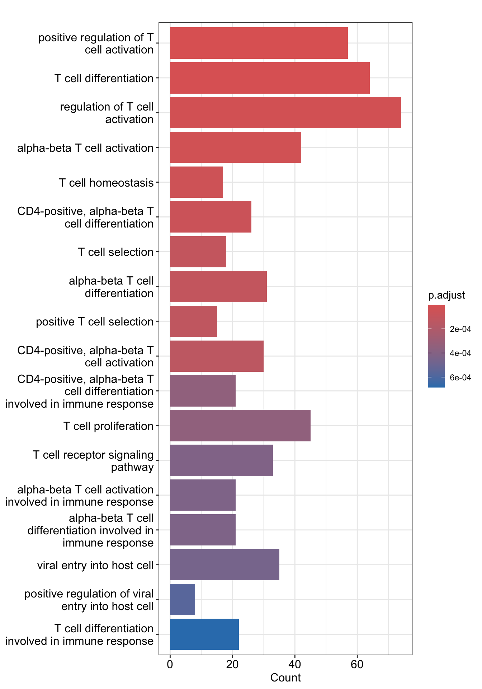

# libraries for this chapter
library(tidyverse)
library(Seurat)
library(data.table)
library(celldex)
library(SingleR)
library(ExperimentHub)
library(org.Hs.eg.db)
library(clusterProfiler)
library(AnnotationDbi)
library(enrichplot)
library(biomaRt)Chapter 8 Enrichment Analysis
Load RData
Load the RData which contain all files from previous chapter.
load("data/intermediate_data/chapter7.RData")Oftentimes, enrichment analysis takes in the differentially expressed genes and looks at which gene ontology (GO) terms are enriched.
GO terms defines concepts/classes used to describe gene function and relationships between these concepts. clusterProfiler is an R package implementing many methods to analyze and visualize functional profiles from a group of features. It classifies functions along three aspects.
MF: Molecular Function: molecular activities of gene products
CC: Cellular Component: where gene products are active
BP: Biological Process: pathways and larger processes made up of the activities of multiple gene products
This chapter uses the differentially expressed genes in CD4+ T cells from last chapter as an example.
1. Get Entrez ID
clusterProfiler prefers the input of Entrez ID. We use biomaRt package to convert the gene symbol into Entrez ID.
Note
biomaRt is handy for getting information about a group of features. You can use it to get gene symbols, genomic coordinates, transcripts, etc. You can explore what data is stored in biomaRt with listAttributes.
The differentially expressed genes in CD4+ T cells between naïve and activated PBMCs are stored in cd4t. The gene symbol in this list can be converted into Entrez ID by biomaRt.
Firstly, connect to the Ensembl database and specify we want to retrieve information from the dataset of Homo Sapien.
mart <- useMart(biomart = "ensembl", dataset = "hsapiens_gene_ensembl")biomart BioMart database connect to. Here, we want to connect to ensembl database.
dataset Dataset to use. Here specify hsapiens_gene_ensembl.
Next, we can give a list of gene symbols and retrieve the Entrez ID through getBM.
attributes Attributes to retrieve. We want to have the gene symbols and Entrez ID in the results.
filters Which filter to use to filter the dataset.
values A list of features as a query.
mart Object of class Mart, created with the useMart function.
A table of two columns is created and stored in results.
head(results) entrezgene_id external_gene_name
1 81532 MOB2
2 79602 ADIPOR2
3 196513 DCP1B
4 55449 DHRS4-AS1
5 80344 DCAF11
6 51016 EMC9Not every gene has the Entrez ID. We keep only genes that have a matched Entrez ID.
2. GO over-representation analysis
Over Representation Analysis (ORA) is a widely used approach to determine whether known biological functions or processes are over-represented (= enriched) in an experimentally-derived gene list, e.g. a list of differentially expressed genes (DEGs).
We use the enrichGO to get the enriched GO terms in the list of features.
gene A list of Entrez gene id.
keyType The keytype of input gene.
OrgDb The database with detailed information about the species.
org.Hs.eg.db Specify the database of Homo Sapien.
ont One of “BP” (biological process), “MF” (molecular function), and “CC” (cellular component) subontologies, or “ALL” for all three.
pAdjustMethod Multiple testing method for p-value.
pvalueCutoff Adjusted pvalue cutoff on enrichment tests to report.
qvalueCutoff Tge qvalue cutoff on enrichment tests to report as significant.
readable Whether mapping gene ID to gene Name.
Let’s convert the ego object into a data frame and visualize the results in a bar plot.
ego.table <- as.data.frame(ego)GeneRatio The gene counts from the input list found in the gene set of a GO term / gene counts of input list.
BgRatio The gene counts of a geneset / size of all of the unique genes in the collection of genesets.
barplot(ego, showCategory = 18)
3. GSEA
All genes can be used as input of GSEA (Gene set enrichment analysis). We first rank the genes based on stat.
We use gseGO to perform GSEA and convert the results into a dataframe.
# perform GSEA
gse <- gseGO(gene_list,
keyType = "ENTREZID",
ont = "BP",
OrgDb = "org.Hs.eg.db")
# convert the results into a dataframe
gse.table <- as.data.frame(gse) %>%
mutate(geneSetID = 1:dim(.)[1])enrichmentScore The enrichment score (ES) represents the degree to which a set S is over-represented at the top or bottom of the ranked list L.
We can look at the enrichment of some GO terms in GSEA plot.
We have significant enriched term in the unregulated genes. Along the x axis is the ranked genes. Each of the vertical line is one of those genes that are found in this gene set. Along the running line, you can see a lot of genes running together and it falls out when the gene becomes more sparse in the list.
4. Save
Save the files into RData for documentation.
# save(integrate.filtered.rna, expMat, cd4t, ego.table, gse.table, file = "data/intermediate_data/chapter8.RData")